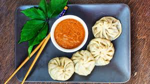
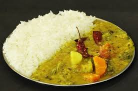
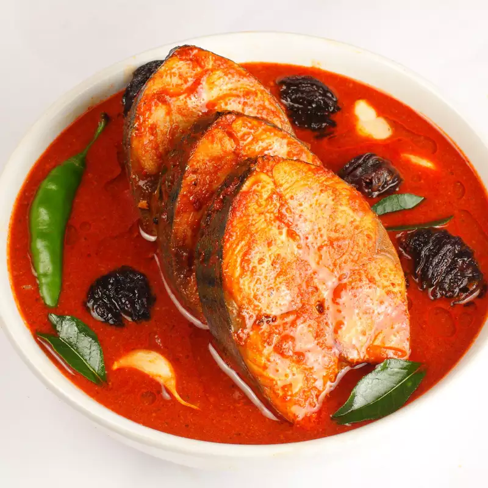

Tastes Of India
India is a land of vibrant colors, diverse cultures, and an incredibly rich culinary heritage. Every region in the country boasts a unique palette of flavors, techniques, and traditions that reflect its history, geography, and culture. Let’s embark on a gastronomic journey through India to explore some iconic dishes from various states and regions.
North India: Bold Flavors and Rich Curries
- Punjab - Makke di Roti and Sarso da Saag:
If we talk about Punjab then authentic Punjabi cuisines are the first thing that strikes our mind due to their delicious taste. Punjab is popular because of its tourist places, history, culture, and food. Punjabi people love many dishes but one of the most popular regional cuisines is Makke Di Roti and Sarso Da Saag. This cuisine is made with corn flour and mustard greens that are harvested during winter and served with hot ghee and some jaggery.
You can enjoy the authentic taste of Punjab in many north Indian states because this is one of the most popular cuisines prepared during winter in north India. This exotic Punjabi dish tastes delicious and contains a huge amount of vitamins and nutrients. So, next time whenever you travel by train then kindly do not forget to order this delicious delicacy of Punjab on Railrecipe.
- Delhi - Chole Bhature

This popular street food features spicy chickpea curry (chole) served with deep-fried, fluffy bread (bhature). It’s a hearty meal loved across North India.Chole bhature's place of origin is debated. Some sources claim it originated in Delhi, where it is very popular. Chole bhature is a food dish popular in the northern areas of the Indian subcontinent. It is a combination of chana masala (spicy white chickpeas) and bhatura/puri, a deep-fried bread made from maida. Chole bhature is often eaten as a breakfast dish, sometimes accompanied with lassi. It can also be street food or a complete meal and may be accompanied with onions, pickled carrots, green chutney or achaar.
- Kashmir - Rogan Josh
A fragrant lamb curry infused with Kashmiri chili, garlic, and yogurt, Rogan Josh is a staple of Kashmiri cuisine. Its deep red hue and aromatic spices make it a winter favorite. Kashmir is popularly known as “Paradise on Earth” due to its incredible beauty, snow-capped mountains, dry fruits, Pashmina shawls, and delicious cuisines. One of the most popular Kashmiri cuisines is “Rogan Josh”. It is a goat meat recipe cooked in ghee with a very slow cooking method with some authentic Indian spices. This Kashmiri cuisine is a finger-licking traditional lamb curry that originated in Persia and is very famous in Kashmir. The word "Rogan" means beautiful fiery red-colored oil that floats on the top of this cuisine and “josh” means heat this color and heat both come from the use of Kashmiri red chilies that is very famous in Kashmir.
- Himachal Pradesh - Dhaam:
If you want to enjoy the traditional and pure taste of Himachal-Pradesh then you should try Dhaam because it is a plate full of Himachali cuisines that tastes amazingly delicious. This authentic Himachali thali contains different cuisines from different regions like plain rice, fried pulses or dal, rajma, curd, curry, and different types of desserts that make this thali a wholesome meal.
- Uttarakhand - Kafuli:
Kafuli is a very popular Pahadi dish from Uttarakhand. It is a kind of spinach curry that is often served with steamed rice and chapattis. Kafuli is very beneficial for our overall health due to the presence of spinach which contains a huge amount of nutrition. The main ingredients of Kafuli are spinach, fenugreek, garlic, green chilies, and curd and rice paste. This unique curry tastes delicious when served hot.
- Haryana - Kadi Pakora:
Haryanvi people love Kadi Pakora (Curry Pakora) due to its sour and salty taste of kadi and the soft and fluffy texture of pakora dipped in kadi. Kadi is basically gravy made from sour yogurt and is thickened by using gram flour and pakora means fritters made from gram flour (besan). Kadi pakora is not only famous in Punjab and Haryana but also all over the country due to its delicious taste. This Haryanvi cuisine is also prepared in every Indian household and is often served with chapattis or steamed rice.
- Uttar Pradesh - Tunde ke Kebab:

Uttar-Pradesh is famous for many cuisines like Chaat, Boondi, Biryani, etc but one of the famous dishes of Uttar-Pradesh is tuned kebab. Tunde Ke Kebab basically comes from Lucknow which is known as the “city of Nawabs” due to its royal history. Lucknowi people love meaty delights such as kebabs. This kebab tastes amazingly delicious and is made with goat, plain yogurt, garam masala, ghee, onion rings, graded ginger, dried mint, crushed garlic, and other Indian spices. It is a proper royal cuisine and Lucknowi people love to have this in their main course and is often served with paratha and chutney.
Tunde Kabab is a famous and iconic dish from the city of Lucknow, in the northern state of Uttar Pradesh, India. It is made from a blend of over 160 different spices and is traditionally made from a specific type of meat, usually beef or buffalo meat. The meat is slow-cooked on skewers over a charcoal fire, giving it a smoky flavor. The dish is known for its tender and juicy texture and its rich and complex flavor.
- Chhatisgarh - Chila:
Chila is very famous in Chhatisgarh. This dish is basically made with rice flour batter mixed with the Urad Daal tastes very delicious and is often served with green chutney or tomato sauce. Chila is a flat chapati-like dish that which a very lightweight texture. People from Chattisgarh like to have Chila mostly in their breakfast because it is easily digestible and also very easy to cook.
South India: Spices, Rice, and Coconut
- Andhra Pradesh - Kodi Pulao:
Rice is a staple food of Andhra Pradesh. Kodi Pulao is one of the most special cuisines of Andhra Pradesh due to its spicy blend of rice and meat. This special pulao is simmered in different spices and herb-infused milk that gives a unique taste and flavor. Meat lovers will definitely love this pulao because it tastes heavenly and delicious. This pulao is often served with onion rings and raita.
- Telangana - Hyderabadi Biryani:

Biryani is known as the “food of the god” due to its huge fan following all over the world. It is an evergreen classic cuisine that really needs no introduction. If we talk about biryani then, how can we forget Hyderabadi Biryani? It is one of the most popular cuisines in Telangana due to the aromatic flavor of spices and the good color of saffron. The base ingredients of Hyderabadi biryani are basmati rice, goat or chicken meat, curd, fried onion, and Indian spices. This biryani is not only popular in Hyderabad but also all over the country due to its classic flavors and royal taste.
- Tamil Nadu - Rasam:

If we talk about South-Indian cuisines then “Rasam” needs no introduction due to its tangy taste and spicy flavors of ground spices. Rasam is prepared in many South-Indian households and served with hot steamed rice that tastes delicious. It is a soupy curry made with different herbs, lentils, veggies/fruits, and tamarind. Traditional south-Indian cuisines are totally incomplete without rasam.
- Kerala - Appam:
Appam is very famous in Kerala due to its taste and soft and fluffy texture. Appam is usually made up of ground, fermented rice, and coconut batter. This cuisine is often served with chutney or vegetable stew. This thin pancake is originated in Tamil Nadu and also very famous in Kerala. Appam is a very healthy and easily digestible cuisine due to the presence of fermented rice batter.
- Karnataka - Bisi Bele Bath:
Bisi Bele Bath is a popular rice-based dish from the state of Karnataka in southern India. The dish is made by cooking rice, lentils, and vegetables together with a variety of spices, including mustard seeds, cumin, turmeric, and red chili powder. It is typically served with a side of chutney or raita and is considered a complete meal in itself. The dish is also known for its unique balance of flavors and spices, which is said to be a result of the use of specific types of lentils and the blending of various spices in the right proportions. It is considered a signature cuisine of Karnataka.
East India: Subtle, Sweet, and Diverse
- Jharkhand - Dhooska:
Dhooska is very popular in Jharkhand. It is basically a deep-fried snack served with potato curry, spicy chutney, and fresh salad. This is a wholesome cuisine due to the presence of chana dal and white urad dal in it. For preparing Dhooska you have to soak these ingredients overnight and then grind it in a food processor, after that the batter is then deep fried and served hot with chutney and salad.
- Bihar - Litti Chokha:

If you talk about Bihar then “Litti-Chokha” needs no introduction because it is the most loved cuisine in Bihar, especially on the Bhojpur side of Bihar. In this cuisine, Litti is the stuffed whole wheat dough ball and Chokha is a mashed relish made with roasted eggplant, tomato, and boiled potatoes with some green. Chokha is served with Litti to make this meal complete along with green chutney and onion salad. chilies and garlic This delicious Bihari delicacy can be cooked without gas or oven you just need some coal or cow-dunk cake for roasting your Litti and vegetables for Chokha. Litti Chokha is considered a wholesome meal itself and people from Bihar usually like to have it at dinnertime.
- Assam - Papaya Khar:
Assamese recipes are totally incomplete without “Khar” because it is very famous in Assam. Khar is basically an exotic liquid strained from sun-dried banana skin and cooked with seasonal vegetables like papaya, potatoes, etc. Papaya Khar is very popular in Assam because it contains many health benefits like it boosts immunity, improving eyesight, reducing weight, etc. Assamese people prepare papaya Khar by using raw papaya and potatoes with the right amount of different spices that give this dish a unique flavor.
- West Bengal - Kosha Mangsho:

Kosha Mangsho is also called Bengali mutton curry and it is one of the most popular Bengali cuisines due to its delicious taste juicy mutton pieces and different flavors of hot spices. The word kosha refers to “bhuna” which means slowly cooking gravy in mustard oil on low flame for a very long time to get a thick, rich, spicy gravy and mouthwatering mutton pieces. You often heard that Bengali people love fish cuisines but apart from that Kosha Mangsho is one of the most popular Bengali mutton curries that are popular for its exotic taste and spiciness.
- Sikkim - Momo:

In the list of Indian cuisines, momo needs no introduction because it has a huge fan following in our country. This mouth-watering cuisine is often served with spicy tomato chutney and sometimes with a clear soup called “Thukpa”. Momo is basically a bite-size dumpling made with a spoonful of stuffing of either meat or veggies and then cooked in the steaming method. This delicious delicacy is not only popular in Sikkim but also all over the world.
- Tripura - Chuak:

Chuak is a traditional dish of Tripura. The people of Tripura consume this cuisine on auspicious occasions. Chuak is basically a drink made from fermented rice and water. That’s the reason why it is also called “rice beer”.
- Manipur - Kangshoi:
Kangshoi is a kind of vegetable stew that is very popular in Manipur. In this unique cuisine, they add many seasonal vegetables that are boiled and flavored with sliced onion, cloves, salt, garlic, and ginger. This vegetable stew is usually served with rice or fish and consumed hot.
- Meghalaya - Jadoh:
Jadoh is a traditional dish of Meghalaya and especially comes from the Khasi tribe from Meghalaya. This cuisine is a kind of biryani prepared in Meghalaya. This recipe doesn’t need a long list of ingredients it just needs basmati rice and a few Indian spices.
- Nagaland - Bamboo Fish
Fish cooked in bamboo is one of the most famous delicacies of Nagaland. This dish is made in bamboo vassal by filling it with fish and some aromatic spices and green chilies, after that it is cooked over fire. Due to aromatic spices and unique cooking methods, Bamboo Fish from Nagaland tastes delicious and unique. Very few Indian ingredients are used in this delicacy like fish, green chilies, coriander leaves, bamboo shoots, garlic, ginger, etc.
- Mizoram - Misa Mach Poora:
Mizoram is popular for its evergreen hills, bamboo forests, unique cultures, and traditions, apart from that they also love different cuisine like Koat Pitha, Bamboo Shoot fry, etc. One of the most loved Mizoram delicacies is Misa Mach Poora due to its mouth-watering taste. It is basically a kind of side dish of Mizoram made with shrimp. In this delicious delicacy, people use to roast or grill the shrimp in banana leaves. You don’t need a long list of ingredients for making this yummy seafood dish because only a few ingredients like mustard oil, lemon juice, orange zest, and aromatic spices are enough for making this dish.
- Arunachal Pradesh - Chura Sabji:
This cuisine is very popular in Arunachal Pradesh due to its unique flavors of this delicious delicacy. Chura Sabji is basically a curry kind of dish made of fermented cheese of either yak milk or cow milk. This dish tastes amazingly delicious and spicy at the same time due to the flavors of different herbs and chili flakes.
- Odisha - Dalma:

Dalma is basically a dal recipe made in a different way and tastes super delicious. Odisha dal is prepared differently with the use of pure Indian spices and authentic ingredients. This delicious recipe is made with roasted yellow moong dal, ginger, green chilies, and some chopped seasonal vegetables like carrot, tomato, coriander leaves, onion, pumpkin, etc. This dish contains a huge amount of protein and other nutritional elements like vitamins and minerals. After cooking dal desi ghee, red chilies, panch Phooran, and chili powder are used for giving a nice “Tadka”.
West India: Zesty and Coastal Treats
- Maharastra - Misal Pav:
You often heard that Maharashtrian people love Vada Pav but apart from that one of the most popular all-time favorite Maharashtrian cuisine is Misal Pav. It is a kind of Maharashtrian curry consisting of sprouts, topped with onions and Farsan, and served with Indian dinner rolls (pav). This delicious Kolhapuri cuisine tastes super spicy and tangy that contains various flavors of different spices.
- Gujrat - Dhokla:
Gujarati foods are very famous due to their unique flavors, tempting colors, and sweet tinge that comes after taking a bite of Gujarati food. Gujrat is popular for many dishes like Khandvi, Fafda Jalebi, Thepla, dal Dhokli, etc, but one of the most famous cuisines in Gujrat is “Dhokla”. This is a must-try cuisine due to its sweet and salty taste and soft and fluffy texture. This recipe is very lightweight and easily digestible for our stomachs that’s the reason Gujrati people love to have dhokla in the morning for breakfast. Our honorable prime minister is also from Gujrat and he loves dhokla in his morning breakfast.
- Goa - Fish Curry:

Goa is all about overwhelming beaches, architectural wonders like old Goa churches, and delicious sea foods. Fish Curry is most of the most loved cuisine in Goa that tastes super delicious and rich due to the unique flavors of different spices. Goa is a beachside place where fish dishes and sea foods are common cuisines. Some of the main ingredients of this Goan fish curry are fish, coconut milk (it gives a creamy texture to curry), tamarind (it gives a slightly sour taste), and common curry spices.
- Rajasthan - Dal Bati Churma:

Rajasthani people are famous for their colorful culture, historical hill forts, royal palaces, and tasty delicacies. From sweet and delicious Ghevar to Bajre ki Roti, Rajasthani foods are always on the top list if we talk about finger-licking delicacies. Dal Bati Churma is one of the most popular typical Rajasthani cuisine containing a three-in-one treat on one plate. Dal is one of the main dishes of Rajasthan and Churma is a very popular well-known Rajasthani sweet made up of using coarsely ground wheat flour, and besan (gram flour). Bati is hard bread made with semolina coarse wheat flour, ghee, jeera, and fennel seeds for adding flavor. Dal-Bati Churma tastes amazingly delicious due to the combination of sweet and savory tastes.
Central India: Earthy and Robust
- Madhya Pradesh - Poha:
Poha is one of the most famous and healthy dishes that come from Madhya Pradesh. This dish is super light and very healthy cuisine made with flattened rice, oil, and some mustard seeds. This super healthy delicacy is fondly eaten in all parts of our country for breakfast. There are very few ingredients are needed while making Poha and served with chutney.
India - Different States different foods
| S.No |
states |
Famous cuisines |
| 1 |
Punjab |
Makke di Roti and Sarso da Saag |
| 2 |
Kashmir |
Rogan Josh |
| 3 |
Himachal Pradesh |
Dhaam |
| 4 |
Uttarakhand |
Kafuli |
| 5 |
Uttar Pradesh |
Tunde ke Kebab |
| 6 |
Haryana |
Kadi Pakora |
| 7 |
Chattisgarh |
Chila |
| 8 |
Andhra Pradesh |
Kodi Pulao |
| 9 |
Hyderabad |
Hyderabadi Biryani |
| 10 |
Tamil Nadu |
Rasam |
| 11 |
Kerala |
Appam |
| 12 |
Karnataka |
Bisi Bele Bath |
| 13 |
Jharkhand |
Dhooska |
| 14 |
Bihar |
Litti Chokha |
| 15 |
Assam |
Papaya Khar |
| 16 |
West Bengal |
Kosha Mangsho |
| 17 |
Sikkim |
Momo |
| 18 |
Tripura |
Chuak |
| 19 |
Manipur |
Kangshoi |
| 20 |
Meghalaya |
Jadoh |
| 21 |
Nagaland |
Bamboo Fish |
| 22 |
Mizoram |
Misa Mach Poora |
| 23 |
Arunachal Pradesh |
Chura Sabji |
| 24 |
Odisha |
Dalma |
| 25 |
Maharastra |
Misal Pav |
| 26 |
Gujarat |
Dhokla |
| 27 |
Goa |
Fish Curry |
| 28 |
Rajasthan |
Dal Bati Churma |
| 29 |
Madhya Pradesh |
Poha |